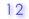
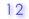
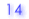
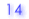

| C. 各バイサルファイト配列についての情報 バイサルファイト配列はグループごとに分けて表示されます。 |
|
| 1. |
ゲノム配列とのアライメントでのミスマッチの数、相同性など |
| 2. |
メチル化されているCpGの数 |
| 3. |
バイサルファイト変換されなかったCpA, CpC, CpTの数 |
| 4. |
CpGのメチル化のパターン（黒丸がメチル化されたCpG, 白丸がメチル化されていないCpG） |
| 質が低いと判定されたバイサルファイト配列は除外されて、メチル化のパターン（4.）は表示されません。
また、条件に引っかかった値が赤紫色で示されるとともに（1.及び3.欄）、
条件の種類がメチル化パターン欄（4.）に表示されます（下記参照）。除外のための条件の値は変更可能です
（"オプションの表示"を参照）。 |
|
 |
mismatch:
ゲノム配列とバイサルファイト配列のアライメントのミスマッチの数（ギャップを含む）が上限値を超えた場合です（デフォルト値は10）。
これは、シークエンシングデータが汚い場合に起こります。 |
| |
% ident:
ゲノム配列とバイサルファイト配列のアライメントの相同性（％）が下限値を下回った場合です（デフォルト値は90％）。
これは、シークエンシングデータが汚い場合に起こります。 |
| |
unconv:
バイサルファイト変換で未変換のCpH（CpA, CpC, CpT）の数が、上限値を超えた場合です（デフォルト値は）。
これは、バイサルファイト変換が不完全だった場合に起こります。 |
| |
% conv:
"変換されたCpHの数" / "CpHの総数" の％値が下限を下回った場合です（デフォルト値は95％）。
これは、バイサルファイト変換が不完全だった場合に起こります。 |
| |
user desired: これは、"exclude" 欄のチェックボックスをユーザがチェックした場合です。 |
|
|


 

 
